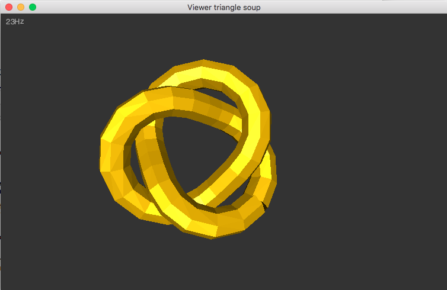
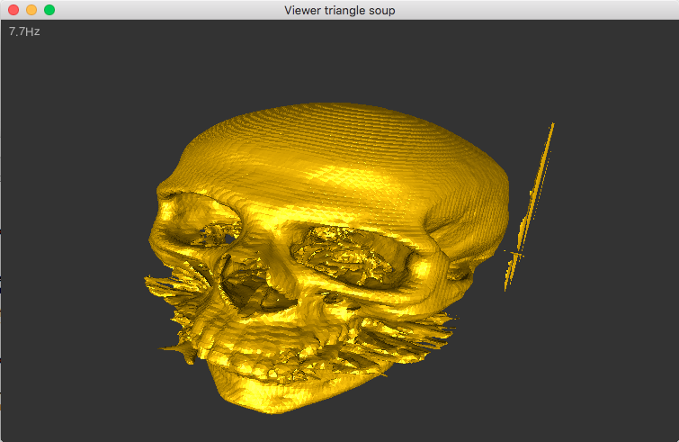
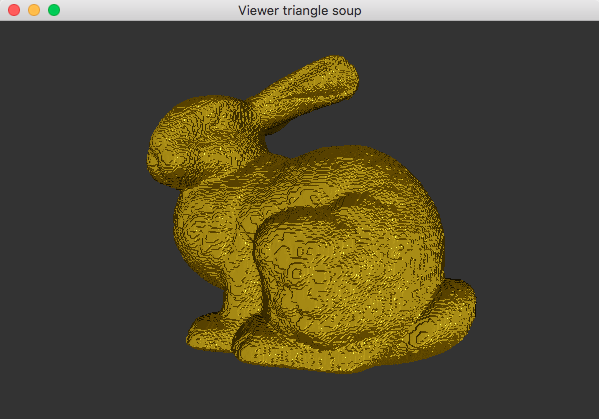
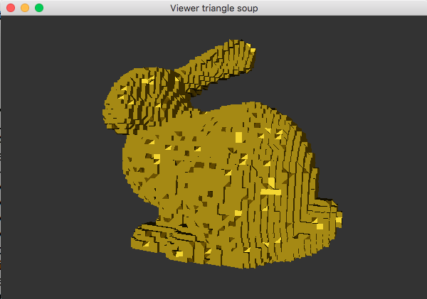
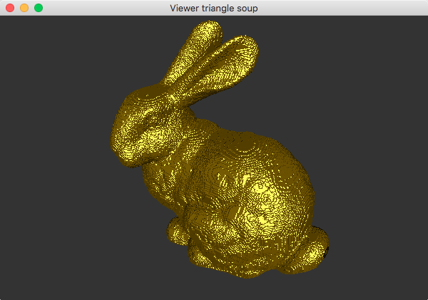
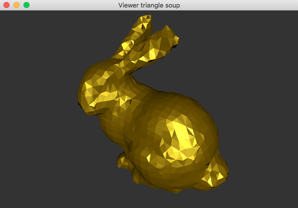
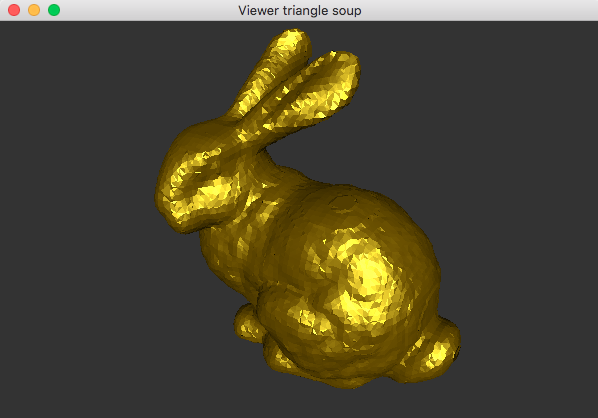
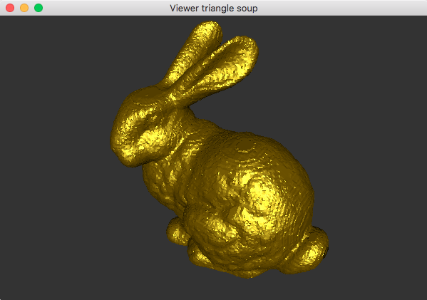

|
INFO804 Introduction à l'informatique graphique
|
L'objectif de ce TP est de vous familiariser avec l'informatique graphique, d'une part avec quelques petits traitements OpenGL, d'autre part avec un peu d'algorithmique sur des modèles géométriques simples. Le langage utilisé sera le C++. On utilisera pour l'interface graphique la bibliothèque libQGLViewer. Celle-ci utilise Qt et OpenGL. L'avantage de ne pas faire de l'OpenGL directement est que libQGLViewer gère déjà pour vous la caméra, ainsi que le déplacement de la caméra. A l'issue de cette séance, vous maîtriserez:
L'objectif du TP est:
Les sites suivants pourront être utile pendant le TP:
On vous donne trois fichiers main.cpp, Viewer.h, Viewer.cpp, et un fichier de configuration Qt viewer.pro. Il faut donc avoir installé libqglviewer-dev et Qt (qt5, qt6 pas testé). A priori, tout le code peut marcher sous Windows ou MacOS. On utilise qmake pour construire un Makefile à partir du fichier viewer.pro. Le fichier a la forme ci-dessous, à adapter selon votre configuration:
Tapez donc
$ qmake $ make
L'application viewer est construite et vous pouvez l'exécuter.
qt5-default et libqglviewer-dev. On peut ensuite utiliser le fichier viewer.pro tel quel.install_name_tool -add_rpath PATH peut être utile.Regardez maintenant les fichiers Viewer.h et Viewer.cpp.
La méthode Viewer::draw est appelée chaque fois que nécessaire (par exemple à chaque déplacement de la caméra). C'est elle qui envoie les ordres d'affichage à OpenGL, via les commandes glBegin, glColor, glVertex, etc. Notez que les commandes de positionnement de la caméra et de la transformation perspective sont faites par libQGLViewer (donc la classe qglviewer::QGLViewer).
Ainsi, pour afficher des triangles, vous n'aurez qu'à donner les coordonnées des 3 sommets de chacun des triangles.
On va se donner en entrée des fichiers contenant des triangles décrits sous format texte (c'est pas optimisé, mais c'est pas grave). Par ligne, on aura les 3 coordonnées des 3 sommets de chaque triangle, soit 9 nombres à virgule flottante. Les lignes commençant par '#' seront des commentaires.
# Soupe 1 ... 5.40414 0.269732 0.917559 4.68585 0.381459 0.739248 4.35375 -1.08202 1.25418 5.40414 0.269732 0.917559 4.35375 -1.08202 1.25418 5.02057 -1.34041 1.47509 4.68585 0.381459 0.739248 4.26875 0.269732 0.127895 3.9607 -1.10742 0.617722 4.68585 0.381459 0.739248 3.9607 -1.10742 0.617722 4.35375 -1.08202 1.25418 4.26875 0.269732 0.127895 4.39716 0 -0.558376 4.07166 -1.40172 -0.0614581 4.26875 0.269732 0.127895 4.07166 -1.40172 -0.0614581 3.9607 -1.10742 0.617722 4.39716 0 -0.558376 4.99586 -0.269732 -0.917559 4.62163 -1.79253 -0.385507 4.39716 0 -0.558376 4.62163 -1.79253 -0.385507 4.07166 -1.40172 -0.0614581 4.99586 -0.269732 -0.917559 5.71414 -0.381459 -0.739248 5.28845 -2.05092 -0.164601 4.99586 -0.269732 -0.917559 5.28845 -2.05092 -0.164601 4.62163 -1.79253 -0.385507 5.71414 -0.381459 -0.739248 6.13125 -0.269732 -0.127895 5.68151 -2.02552 0.471856 # etc
Faites un fichier Utils.h (éventuellement aussi Utils.cpp) dans lequel vous allez mettre un peu toutes vos classes.
Commencez par créer une classe Vecteur qui contient quelques fonctions de base pour manipuler 3 flottants.
Faites ensuite une classe Triangle qui se compose de 3 vecteurs, les sommets du triangle. On peut aussi créer des opérateurs flux pour la classe triangle, sur le même principe que ci-dessus.
Ecrivez maintenant la classe TriangleSoup qui comporte au moins les méthodes et attributs suivants:
Vous allez avoir besoin d'inclure les entêtes systèmes iostream, fstream, sstream. On rappelle que pour obtenir le flux en lecture sur le fichier "toto.tri", on écrit:
getline(
istream, string ) dans une chaîne de caractères str. Ensuite, créez un istringstream autour de str pour voir la chaîne comme un flux d'entrée, et passez ce flux à l'operateur >> de Triangle.Il ne vous reste plus qu'à écrire la méthode read pour lire les triangles dans le flux en entrée. Transformez votre main pour qu'il récupère en premier paramètre (argv[1]) le nom du fichier contenant les triangles. Je vous donne ci-dessous des pointeurs vers des soupes de triangles.
Vous vérifiez que ça fonctionne en affichant le nombre de triangles dans votre classe TriangleSoup après chargement.
On modifie maintenant la classe Viewer en lui rajoutant un pointeur vers un TriangleSoup, et en rajoutant au constructeur un paramètre TrangleSoupe:
Modifiez maintenant la fonction Viewer::draw pour qu'elle affiche tous les triangles de la soupe, au lieu du tétraèdre.
Voilà un aperçu de ce que ça donne sur "tref.tri", si vous avez choisi la couleur bronze.
Il y a normalement plusieurs problèmes:
On va les résoudre dans les questions suivantes.
Il faut préciser à la caméra la taille et la position de l'objet à regarder pour qu'elle embrasse toute la scène au début. C'est en fait relativement complexe si on devait le faire sur les matrices de transformation, mais tout simple grâce à QGLViewer.
Il suffit juste de calculer la boîte englobante à l'objet (ici la soupe de triangles), et de la donner au Viewer. Pour ce faire, écrivez d'abord les deux méthodes suivantes dans Vecteur, qui vont servir à calculer les deux points extrêmes qui définissent une boîte englobante (l'un est le inf de tous les vecteurs, l'autre est le sup de tous les vecteurs):
En utilisant les 2 méthodes ci-dessus, écrivez ensuite la méthode void TriangleSoup::boundingBox( Vecteur& low, Vecteur& up) qui calcule la boîte qui englobe tous les sommets de la soupe de triangle.
Il ne reste plus qu'à appeler dans la méthode Viewer::init, la méthode boundingBox suivie de la méthode qui règle la camera.
Pour que OpenGL puisse calculer une couleur qui dépend de l'éclairage et de la position de la caméra, il faut lui donner d'abord une information supplémentaire : le vecteur normal à la surface, donc ici, à chacun à des triangles. Pour un triangle abc donné, nous allons le calculer simplement en faisant le produit vectoriel \( \vec{ab}
\times \vec{ac} \). Ecrivez donc la méthode Vecteur::cross qui calcule le produit vectoriel entre soi-même et un autre vecteur donné en paramètre.
\[ \begin{pmatrix} w_x \\ w_y \\ w_z \end{pmatrix} = \begin{pmatrix} u_y v_z - u_z v_y \\ u_z v_x - u_x v_z \\ u_x v_y - u_y v_x \end{pmatrix} \]
Ecrivez ensuite une méthode Vecteur Triangle::normal() const qui retourne le vecteur normal au triangle (n'oubliez pas de normaliser le vecteur pour qu'il ait une norme 1. Il suffit enfin de rajouter dans Viewer::draw les lignes suivantes:
Vous devriez maintenant avoir votre visualisateur de soupes de triangles qui ressemble à ceci :

td |

td |
En fait, tel qu'écrit plus haut, vous avez donné une couleur ambiente "bronze" (donc c'est le minimum de couleur, même dans le noir), à laquelle vous ajoutez encore une couleur diffuse "bronze" (dépend de la lumière), et enfin une couleur spéculaire jaune, mais très brillant (donc assez métallique). Si vous voulez un effet très métallique, mettez la couleur ambiente à (0,0,0). Vous devriez obtenir:
Vous pouvez jouer un peu avec les paramètres pour voir les différents effets possibles.
Si vous voulez changer les matériaux de chacun des triangles, il faut le dire à OpenGL après glBegin(GL_TRIANGLES) avec:
On peut par exemple obtenir un effet "Elmer" en utilisant la partie décimale des coordonnées d'un sommet comme couleur ambiente.
Nous allons maintenant implémenter un algorithme de compression de soupes de triangles, qui est d'une part entièrement parallélisable, et d'autre part peut même fonctionner sous forme de flux d'entrée-sortie. Chaque triangle sera en effet traité indépendamment des autres.
nbx, nby, nbz. Si vous choisissez (10,10,10) la boîte englobante sera découpée en \( 10 \times 10 \times 10 \) cellules, soit 1000 cellules.Index de la cellule.On va créer une classe TriangleSoupZipper pour réaliser la compression. On va se servir aussi d'une classe Index pour stocker les 3 entiers qui numérotent chaque cellule. Une partie de cette classe vous est donnée ci-dessous:
Rajoutez l'opérateur d'égalité == dans la classe. Vous écrirez ensuite la classe TriangleSoupZipper avec le constructeur suivant:
N'oubliez pas de créer les données membres nécessaires. Vous précalculerez dans le constructeur, la boîte englobante de la soupe de triangles en entrée, les tailles réelles de chaque cellule (i.e. il faut diviser la taille de la boîte par le nombre de cellules le long de chaque dimension).
Vous aurez ensuite besoin de créer une méthode index qui calcule l'Index d'un point dans l'espace, et son inverse la fonction centroid qui calcule le centroïde de la cellule d'Index donné.
Il ne reste plus qu'à écrire une méthode zip() qui compresse tous les triangles de la soupe en entrée et sort les triangles dont les sommets ont des index différents. La position des sommets en sortie est juste centroid( idx ) si idx est l'index du sommet. Vous obtiendrez un résultat du type:

td |

td |
| bunny258.tri (464588 triangles) | pour une décomposition 50x50x50 (19637 triangles) |
Malheureusement le résultat n'est souvent pas très joli. Cela vient du mauvais positionnement des sommets des triangles de sortie. Une meilleure idée est de moyenner tous les sommets qui tombent dans la même cellule, puis en sortie d'associer cette position moyenne aux sommets. On va donc calculer (pendant la fonction zip()) le barycentre des sommets de chaque cellule. Ensuite, on réaffectera les positions des sommets des triangles de sortie.
Il faut donc calculer les barycentres de toutes les cellules qui touchent les triangles. On pourrait faire un grand tableau. C'est un peu lourd. On va plutôt utiliser un tableau associatif, i.e. un std::map en C++, qui va associer à un Index une structure CellData qui va stocker un accumulateur de "Point" et un nombre. Elle aura la forme suivante:
Ecrivez cette structure. Ensuite, ajoutez dans TriangleSoupZipper une donnée membre `index2data:
Mettez à jour zip() pour que chaque sommet soit ajouté au barycentre de sa cellule (mise à jour de index2data). Ecrivez enfin la méthode smartZip() qui :
index2data avec sa méthode clear().zip()Reparcourt les triangles de sortie pour replacer les sommets au barycentre de leur cellule (plutôt que leur centroïde).
Pour chaque sommet s d'un triangle de sortie, sa nouvelle position est index2data[ index( s ) ].barycenter()
Vous devriez maintenant obtenir les résultats suivants, beaucoup plus satisfaisants:

td |

td |
| bunny258.tri (464588 triangles) | pour une décomposition 20x20x20 (3184 triangles) |

td |

td |
| pour une décomposition 50x50x50 (19637 triangles) | pour une décomposition 100x100x100 (74060 triangles) |
Il ne vous reste plus qu'à faire 2 exécutables (qui peuvent être dans deux répertoires différents avec deux fichiers .pro différents):
viewer de soupe de triangles (1 argument: le nom du fichier contenant la soupe de triangles). Ce programme affichera le nombre de triangles en entrée.Et un README à la racine qui précise quelles sont les questions traitées complètement, partiellement, ou non-traitées.
Tout cela sera à remettre via TPLab en binôme avant mercredi 8 janvier minuit.